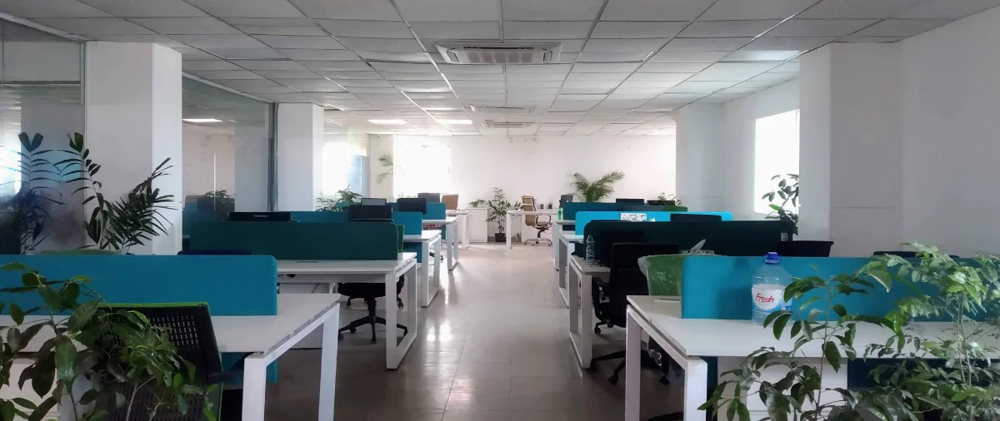

Until 2015, G&R looked like it was heading toward being a genuine success story. We had a strong team, excellent leadership, real market acceptance, everything that seemed necessary to reach the top.
We were never a particularly investor-focused company. We had a few strong backers from the very beginning, and later raised a small internal round, but from a simple financial standpoint, I could see we were already making enough to cover our own costs. G&R didn't need rescuing.
Then came the decision to merge with another company under the same management, with an IPO as the eventual goal. At the time, it felt exciting, a strong PR moment, and a real boost to our collective confidence. It felt like validation.
What I didn't fully understand yet was how lengthy and complicated an IPO process actually is, especially in a country like Bangladesh. It wasn't a project. It wasn't something you could design, ship, and move on from. It was a long, deliberate process that unfolded over years, a different pace of work than I'd built my instincts around, and one that taught me a great deal.
Somewhere in this stretch, our CEO at the time left the company, and I stepped up to fill that gap. I became CEO without any real playbook to follow, and it stretched me well beyond what I'd expected of myself. I'd always seen myself as a product person at heart, but our priorities as a company had shifted by that point, and taking on the role turned into one of the more defining transitions of my career.
Around this time, Google entered the Bangladeshi market with a genuinely excellent product and sales strategy, the kind of competitive presence that could have easily overshadowed us. Instead, it did something unexpected. It didn't push us out, it made us the second option. That validated something important: the need we'd built G&R around was real enough that the market wanted more than one answer to it.

After moving to the Genex HQ, we got a nice office space - but something was missing.
Through 2017, we kept adjusting, our multi-product approach and the rising demand for digital ad channels kept the business moving forward. Our team evolved along the way too, some engineers moved on to new opportunities elsewhere, part of the natural churn of a fast-maturing industry, and we kept building with the people who stayed.
G&R's parent company, Genex, went public in February 2019. It marked a new chapter for the company, one that not everyone from the earliest days stayed to see through, but the milestone belonged to everyone who built toward it.
"A successful exit, and a chapter I'm proud to have built toward."
It was, by most measures, a successful exit, for the investors, and for me as well. Looking back at the prospect and promise G&R once carried, I see a company that grew beyond its founding team into something bigger than any of us could have built alone.